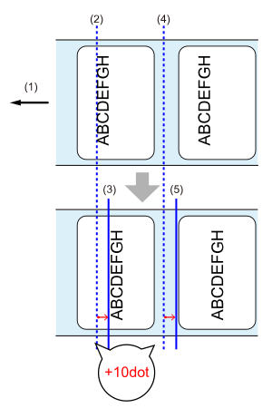

印字位置調整
［印字］ > ［印字調整］
［基点補正］ > ［縦位置補正］
印字の開始位置を用紙送り方向に対して、上下方向に調整します。
印字の開始位置を用紙送り方向に補正したい場合はマイナス値（下図のAを参照）を、用紙送り方向に対して下方向に補正したい場合はプラス値（下図のBを参照）を設定します。
| A | B |
|---|---|
- 用紙送り方向
- 印字基準位置
- 調整後の印字の開始位置
CL4-SXR
- 203dpi：-19999～0～19999dot
- 305dpi：-17999～0～17999dot
- 609dpi：-9599～0～9599dot
CL6-SXR
- 203dpi：-19999～0～19999dot
- 305dpi：-17999～0～17999dot
［基点補正］ > ［横位置補正］
印字の開始位置を用紙送り方向に対して、左右方向に調整します。
印字の開始位置を用紙送り方向に対して左方向に補正したい場合はマイナス値（下図のAを参照）を、用紙送り方向に対して右方向に補正したい場合はプラス値（下図のBを参照）を設定します。
| A | B |
|---|---|
- 用紙送り方向
- 印字基準位置
- 調整後の印字の開始位置
CL4-SXR
- 203dpi：-831～0～831dot
- 305dpi：-1247～0～1247dot
- 609dpi：-2495～0～2495dot
CL6-SXR
［印字有効範囲］が［標準］の場合
- 203dpi：-1215～0～1215dot
- 305dpi：-1983～0～1983dot
［印字有効範囲］が［左寄せ］の場合
- 203dpi：-1339～0～1339dot
- 305dpi： -2009～0～2009dot
オプション基準位置（ティアオフ位置、カット位置、ハクリ位置）を調整します。
オプション基準位置を用紙送り方向に補正したい場合はマイナス値（下図のAを参照）を、用紙送り方向に対して下方向に補正したい場合はプラス値（下図のBを参照）を設定します。
| A | B |
|---|---|
 |
- 用紙送り方向
- 調整前のオプション基準位置（カット位置、ハクリ位置、ティアオフ位置）
- 調整後のオプション基準位置（カット位置、ハクリ位置、ティアオフ位置）
CL4-SXR
- 203dpi：-30～0～30dot
- 305dpi：-45～0～45dot
- 609dpi：-90～0～90dot
CL6-SXR
- 203dpi：-30～0～30dot
- 305dpi：-45～0～45dot
［印字位置調整］
印字の開始位置を用紙送り方向に対して、上下方向に調整します。
印字の開始位置を用紙送り方向に補正したい場合はマイナス値（下図のAを参照）を、用紙送り方向に対して下方向に補正したい場合はプラス値（下図のBを参照）を設定します。
| A | B |
|---|---|
- 用紙送り方向
- 印字基準位置
- 調整後の印字の開始位置
CL4-SXR
- 203dpi：-30～0～30dot
- 305dpi：-45～0～45dot
- 609dpi：-90～0～90dot
CL6-SXR
- 203dpi：-30～0～30dot
- 305dpi：-45～0～45dot
［ピッチ＋オフセット調整］海外
オプション基準位置と印字の開始位置を同時に調整します。
オプション基準位置および印字の開始位置を用紙送り方向に補正したい場合はマイナス値（下図のAを参照）を、用紙送り方向に対して下方向に補正したい場合はプラス値（下図のBを参照）を設定します。
| A | B |
|---|---|
|  |
- 用紙送り方向
- 印字基準位置
- 調整後の印字の開始位置
- 調整前のオプション基準位置（カット位置、ハクリ位置、ティアオフ位置）
- 調整後のオプション基準位置（カット位置、ハクリ位置、ティアオフ位置）
CL4-SXR
- 203dpi：-392～0～392dot
- 305dpi：-588～0～588dot
- 609dpi：-1176～0～1176dot
CL6-SXR
- 203dpi：-392～0～392dot
- 305dpi：-588～0～588dot
用紙頭出しセンサの位置を調整します。
ハクリまたはノンセパカッタを使用している場合は表示されません。
用紙頭出しセンサの位置を用紙送り方向に補正したい場合はマイナス値を、用紙送り方向に対して下方向に補正したい場合はプラス値を設定します。
CL4-SXR
- 203dpi：-30～0～30dot
- 305dpi：-45～0～45dot
- 609dpi：-90～0～90dot
▲TBD CL6-SXR
- 203dpi：-30～0～30dot
- 305dpi：-45～0～45dot
［印字有効範囲］
印字の基点となる位置を設定します。
［左寄せ］を選択すると、本製品に向かって左に印字基点位置を移動します。
CL4-SXR |
CL6-SXR |
A： 用紙送り方向
B： フレーム
C： サーマルヘッド
D: 印字有効範囲（標準）
E： 印字有効範囲（左寄せ）
初期値：［標準］
［印字停止位置］
［センサタイプ］が［なし］に設定されている場合に用紙停止位置またはカット位置を調整します。用紙停止位置からの空白の量も設定します。
CL4-SXR
- 203dpi：0～20000dot
- 305dpi：0～18000dot
- 609dpi：0～9600dot
CL6-SXR
- 203dpi：0～20000dot
- 305dpi：0～18000dot